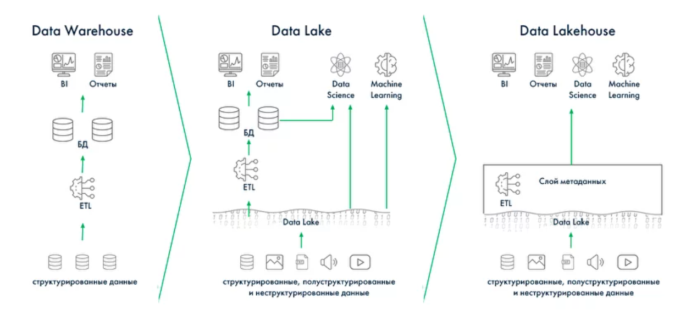

Куратор раздела

Подвальный Артем, Data Engineer
Хочешь перейти в дата-инженерию, но не знаешь с чего начать? Пиши - составим резюме, продумаем твое развитие https://t.me/ampodvalniy
Хочешь улучшить текущий раздел, внести недостающее или поправить формулировку? Предлагай PR и тегай @Artemlin6231
DataLakehouse
Почему появился Data Lakehouse?
Традиционные Data Warehouse (DWH) хорошо справлялись с аналитикой по структурированным данным, но имели ограничения: высокая стоимость, жёсткие схемы и слабая поддержка машинного обучения.
Data Lake стал ответом на эти проблемы: он позволил хранить любые данные (сырые, полу- и неструктурированные) в дешёвых масштабируемых объектных хранилищах (S3, ADLS, GCS). Однако озёра данных не обеспечивали транзакционность (ACID), контроль качества и удобный SQL-доступ.
Data Lakehouse объединяет лучшее из двух миров: - гибкость и низкую стоимость озёр данных, - надёжность и транзакционность хранилищ.
Благодаря открытым табличным форматам (Apache Iceberg, Delta Lake, Apache Hudi) Lakehouse стал единым слоем для BI, аналитики, потоковой обработки и машинного обучения. Сегодня он рассматривается как архитектурный стандарт для современных платформ данных.

DataLakehouse
Введение
Data Lakehouse — это архитектура, которая объединяет в себе преимущества
традиционного Data Warehouse (DWH) и гибкого Data Lake.
Она позволяет хранить данные любого типа в дешёвом масштабируемом хранилище
и работать с ними с помощью SQL, потоковой обработки и ML/AI.
Архитектура и компоненты Lakehouse
1. Слой хранения данных (Storage Layer)
- Используются объектные хранилища: Amazon S3, Azure Data Lake Storage (ADLS), Google Cloud Storage (GCS), HDFS.
- Поддерживаются все типы данных:
- Структурированные: таблицы в формате Parquet, ORC, Avro.
- Полуструктурированные: JSON, CSV, логи, события.
- Неструктурированные: изображения, аудио, видео, документы.
- Основные свойства: низкая стоимость хранения, горизонтальная масштабируемость, независимость от вычислительных ресурсов.
2. Форматы таблиц (Open Table Formats)
Это ключевая инновация, превращающая «просто озеро» в Lakehouse.
- Популярные реализации: Apache Iceberg, Delta Lake, Apache Hudi.
- Основные возможности:
- ACID-транзакции — гарантии целостности и согласованности данных.
- Time travel и снапшоты — возможность читать таблицу в прошлом состоянии.
- Эволюция схемы и партиционирования без перелива данных.
- Оптимизация запросов — partition pruning, min/max статистики, Bloom-фильтры.
- Табличный слой абстрагирует физическое хранение файлов и делает данные доступными через SQL-интерфейсы.
3. Каталоги и метаданные (Catalog Layer)
- Хранят сведения о таблицах, их схемах и снимках:
- Hive Metastore, AWS Glue, Project Nessie, REST/JDBC-каталоги.
- Функции:
- Регистрация и управление таблицами.
- Отслеживание истории изменений (снапшоты, версии).
- Обеспечение согласованности между разными движками (Spark, Flink, Trino и т. д.).
- Это «точка входа» для всех клиентов Lakehouse.
4. Слой вычислений (Compute Layer)
- Lakehouse поддерживает различные сценарии обработки:
- Batch: Apache Spark, Trino, Dremio, Presto.
- Streaming: Apache Flink, Structured Streaming, Kafka + Iceberg/Hudi/Delta.
- ML/AI: PyTorch, TensorFlow, Spark MLlib, MLflow.
- Возможности:
- Массовая аналитическая обработка (OLAP).
- Real-time аналитика на потоках.
- Подготовка датасетов для моделей машинного обучения.
5. BI и аналитика (BI & Analytics Layer)
- BI-инструменты подключаются напрямую к Lakehouse:
- Power BI, Tableau, Looker, Superset.
- Возможности:
- SQL-доступ без выгрузки данных в отдельный DWH.
- Поддержка интерактивных дашбордов и batch-отчётов.
- Объединение BI и Data Science на едином источнике данных.
6. Управление и безопасность (Governance & Security Layer)
- Ключевой слой для корпоративного использования:
- Data Governance: контроль качества данных, аудит, каталогизация.
- Data Lineage: отслеживание происхождения и преобразований данных.
- Безопасность: row-level / column-level security, маскирование, RBAC/ABAC.
- Интеграция с каталогами данных: Collibra, Atlan, Apache Atlas.